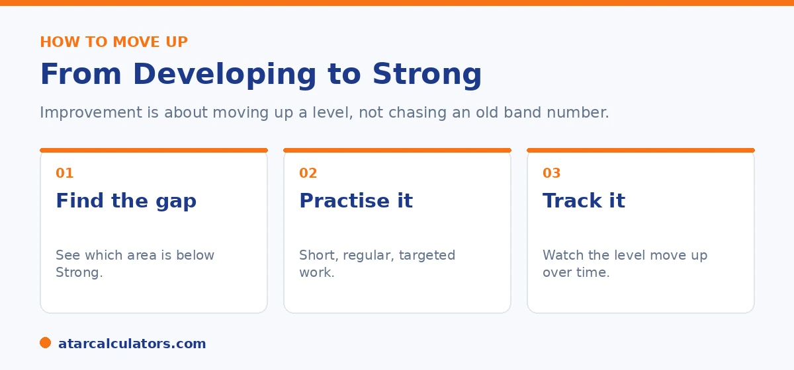

Here is the short version. The best way to help your child improve is to move them up a proficiency level, for example from Developing to Strong, rather than chasing an old band number. Start by finding which area is weakest, give short and regular practice in that area, and track the level over time. Talk to the teacher, keep pressure low, and focus on steady growth. This guide gives practical steps for each area.
Wanting your child to do better in NAPLAN is natural. The good news is that improvement comes from steady, ordinary habits, not last minute cramming.
Since 2023, NAPLAN reports levels, not bands. So the real goal is to move up a level, such as from Developing to Strong. Below are practical steps. To see where your child sits now, use our NAPLAN band calculator.
Key takeaways
- Aim to move up a level (Developing to Strong), not chase a band number.
- Start with the weakest area. Focus there.
- Short, regular practice beats long, rare sessions.
- Read together and talk about numbers in daily life.
- Tutoring can help, but it is not essential.
- Keep pressure low. Calm children learn better.
Aim to move up a level, not a band
First, set the right goal. NAPLAN no longer uses bands, so do not chase a band number. The goal is to move your child up a proficiency level, for example from Developing to Strong, or from Strong to Exceeding.

This matters because a level is a band of scores. Small, steady gains move your child up within their level, and then over the line into the next one. That is real, lasting progress.
Step one: find the weakest area
Open the report and look at each area: reading, writing, spelling, grammar, and numeracy. Find the one or two areas that sit lowest. That is where your effort will do the most good.
Do not try to fix everything at once. Pick the weakest area first. A child who is Strong in numeracy but Developing in reading should spend most of their practice time on reading.
Practical steps for each area
Here is simple, everyday practice for each area.
Reading. Read together for ten minutes a night, then ask your child what happened and why. Writing. Have them write short pieces, like a diary or a story, and talk about ideas and structure. Spelling. Keep a small list of tricky words and practise a few each day. Grammar and punctuation. Point out full stops, capital letters, and commas while reading together. Numeracy. Use daily life: cooking, shopping, time, and money are full of maths.
Want to see which level your child is at right now?
Open the NAPLAN band calculator →Does tutoring help?
Tutoring can help, especially if your child has a clear gap and you want focused support. A good tutor finds the exact skills that are weak and works on those.
It is not essential, though. Many children improve with steady practice at home and support from their teacher. If you do choose a tutor, ask them to target the specific area from the report, rather than general drilling.
Whether tutoring is worthwhile depends on the situation. And it helps to think it through rather than reach for it by default. Tutoring earns its place when there is a clear, specific gap that home support and the classroom are not closing. That might be a child struggling with a particular strand of numeracy, say, or with structuring written responses. A good tutor's value is diagnostic and targeted. They identify exactly which underlying skills are weak and work on those, rather than running a child through generic worksheets. That is the key question to ask any tutor, whether they will address the specific area shown in your child's report or simply drill broadly. This is because untargeted practice is inefficient and can dull a child's enthusiasm. For many children, though, tutoring is not necessary at all. Steady, low-pressure practice at home produces real improvement without the cost or added schedule of tutoring. That means reading together, talking through everyday maths, and encouraging writing. Combine it with support from the classroom teacher, who already knows your child's strengths. The teacher is also the best first port of call. They can tell you precisely where your child sits and what would help most. That is worth knowing before deciding whether to bring in outside support. In short, use tutoring selectively, for a defined gap and with a clear target, rather than as a blanket response. Remember that consistent, encouraging practice at home is often all a child needs to progress.
What not to do
A few things hurt more than they help. Do not cram in the days before the test. Skills build over months, not days. Do not pile on pressure or talk about NAPLAN as high stakes. Stress lowers performance. Do not compare your child to siblings or classmates, which knocks confidence.
Keep the tone calm and supportive. A child who feels safe to try will do better than one who feels watched.
Track progress over time
Set one small goal at a time, like reading every night for a term. Then watch for steady progress, in classroom work as well as the next NAPLAN report.
Remember that staying at the same level from one test to the next is still progress, because the bar rises each year. For more on this, see our guide on comparing results across the years.
Wide reading helps the most
If you do one thing, encourage wide reading. Reading broadly builds vocabulary and comprehension, which lift not only reading but also the worded parts of numeracy and the language conventions test.
So let your child read what they enjoy, and talk about it. This does more for literacy over time than any short burst of test practice.
Common questions
How can I help my child improve in NAPLAN?
Find the weakest area on the report, give short and regular practice in that area, read together, and talk about numbers in daily life. Keep it low pressure and focus on steady growth over time.
How do you move from Developing to Strong?
Focus practice on the specific area that is below Strong, build the skill with short regular sessions, and ask the teacher what to target. Small steady gains move your child up within the level and then over the line.
Does tutoring help NAPLAN results?
It can, especially for a clear gap, if the tutor targets the specific weak area from the report. It is not essential, since many children improve with home practice and teacher support.
Which area should we focus on first?
Start with the one or two areas that sit lowest on the report. Fixing the weakest area gives the biggest improvement. Do not try to fix everything at once.
How long does it take to improve?
Skills build over months, not days, so steady practice across a term or more is what works. There is no quick fix, and cramming before the test does not help.
Do practice tests help?
A little familiarity helps your child know what to expect, especially that the test is online and adaptive. Heavy drilling on practice tests adds stress and does not build skills as well as regular reading and everyday maths.
See your child's current level
Enter a NAPLAN result and year level to see the indicative level. Free, and no signup.
Open the NAPLAN band calculator →Related guides
This guide is general information for parents, not formal advice. NAPLAN reporting can change, so always check the official details on the National Assessment Program (NAP) site, and talk to your child's teacher. Reviewed by the ATARCalculators Editorial Team.